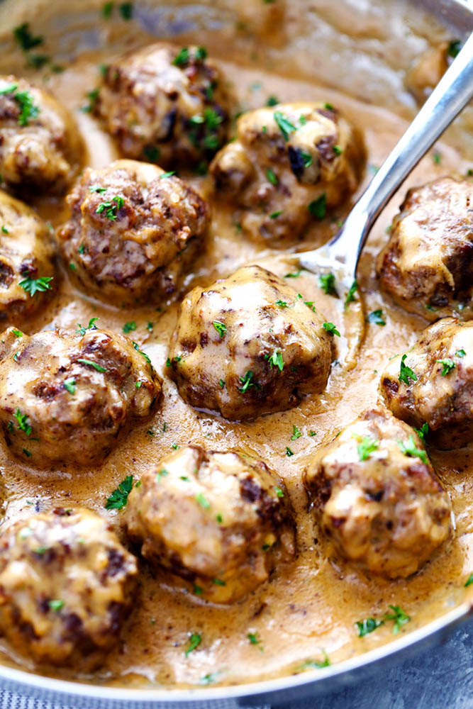

The Best Swedish Meatballs
Submitted by Alli Pichette
These Swedish Meatballs are the perfect meal for a busy family as the weather starts cooling off. The creamy sauce is what sets these apart from the rest, due to the secret ingredient of Worcestershire sauce.
INGREDIENTS
- 1 pound ground beef
- ¼ cup panko bread crumbs
- 1 tablespoon parsley, chopped
- ¼ teaspoon ground allspice
- ¼ teaspoon ground nutmeg
- ¼ cup onion, finely chopped
- ½ teaspoon Garlic Powder
- ⅛ teaspoon Pepper
- ½ teaspoon salt
- 1 egg
- 1 tbsp. olive oil
- 5 tbsp. butter
- 3 tbsp. flour
- 2 cups beef broth
- 1 cup heavy cream
- 1 Tablespoon Worcestershire sauce
- 1 tsp. Dijon mustard
- salt and pepper to taste
INSTRUCTIONS
- In a medium sized bowl combine ground beef, panko, parsley, allspice, nutmeg, onion, garlic powder, pepper, salt and egg.
- Mix until combined.
- Roll into 12 large meatballs or 20 small meatballs.
- In a large skillet heat olive oil and 1 Tablespoon butter.
- Add the meatballs and cook turning continuously until brown on each side and cooked throughout.
- Transfer to a plate and cover with foil.
- Add 4 Tablespoons butter and flour to skillet and whisk until it turns brown.
- Slowly stir in beef broth and heavy cream.
- Add worchestershire sauce and dijon mustard and bring to a simmer until sauce starts to thicken.
- Salt and pepper to taste.
- Add the meatballs back to the skillet and simmer for another 1-2 minutes.
- Serve over egg noodles or rice.